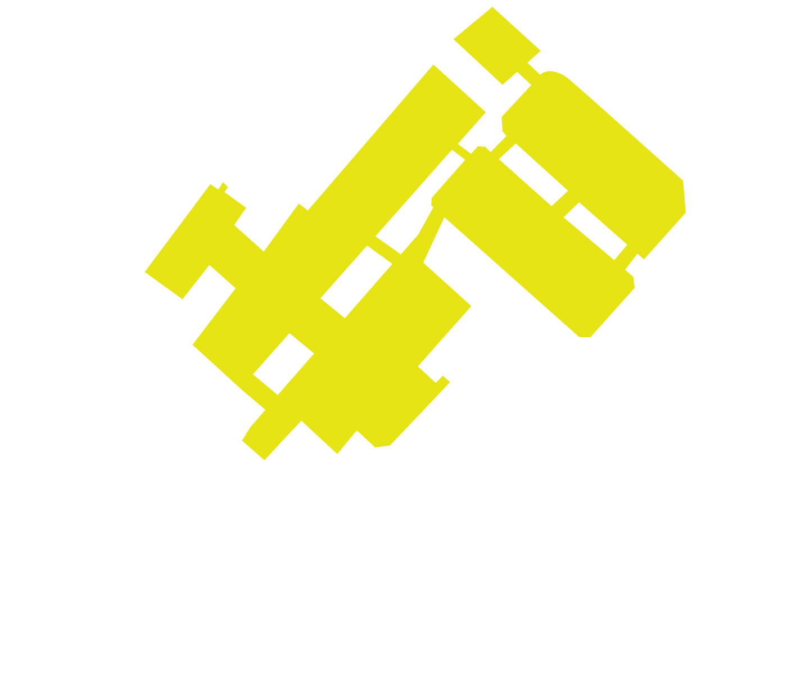
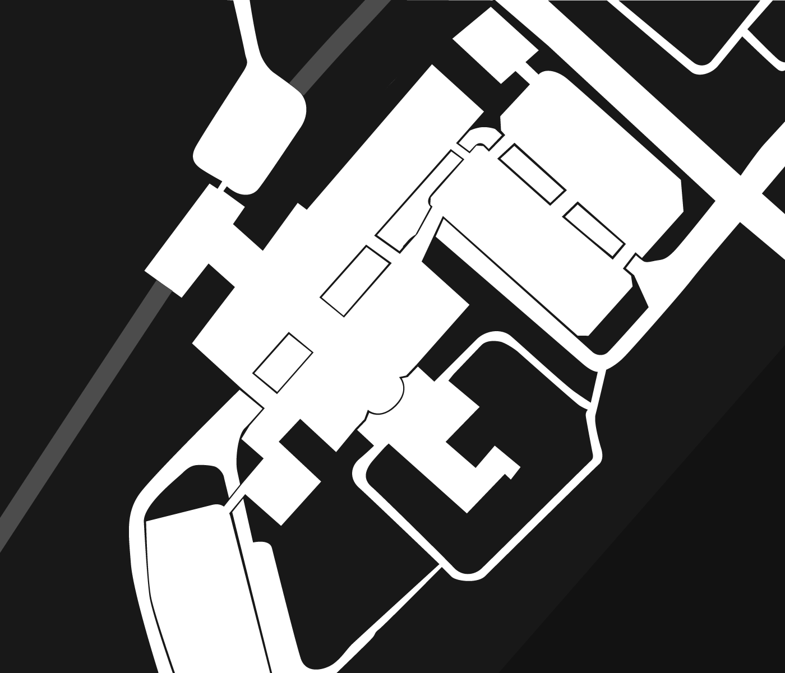
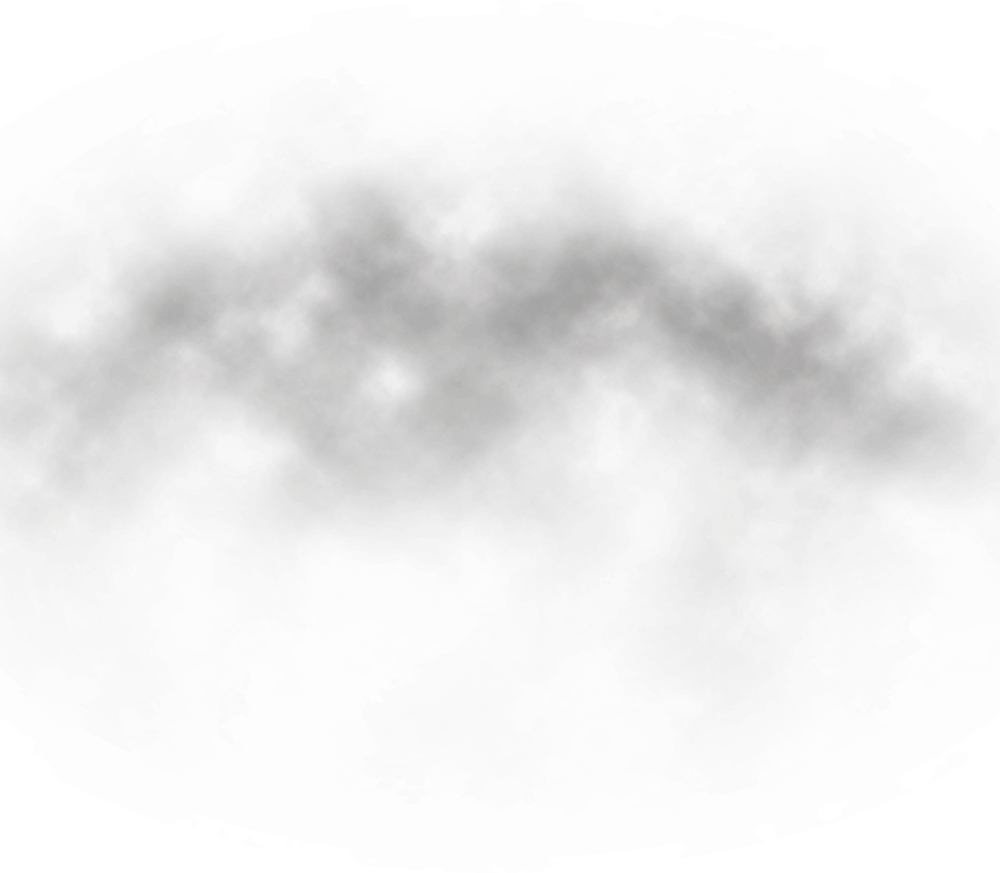
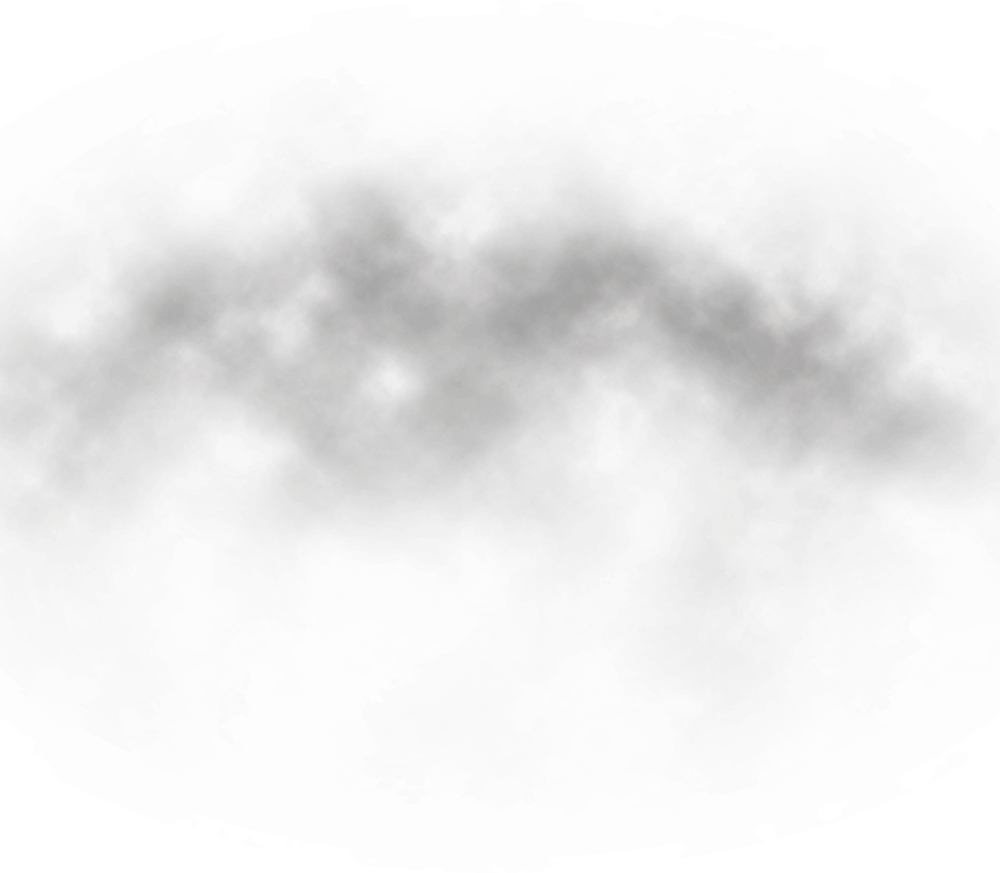
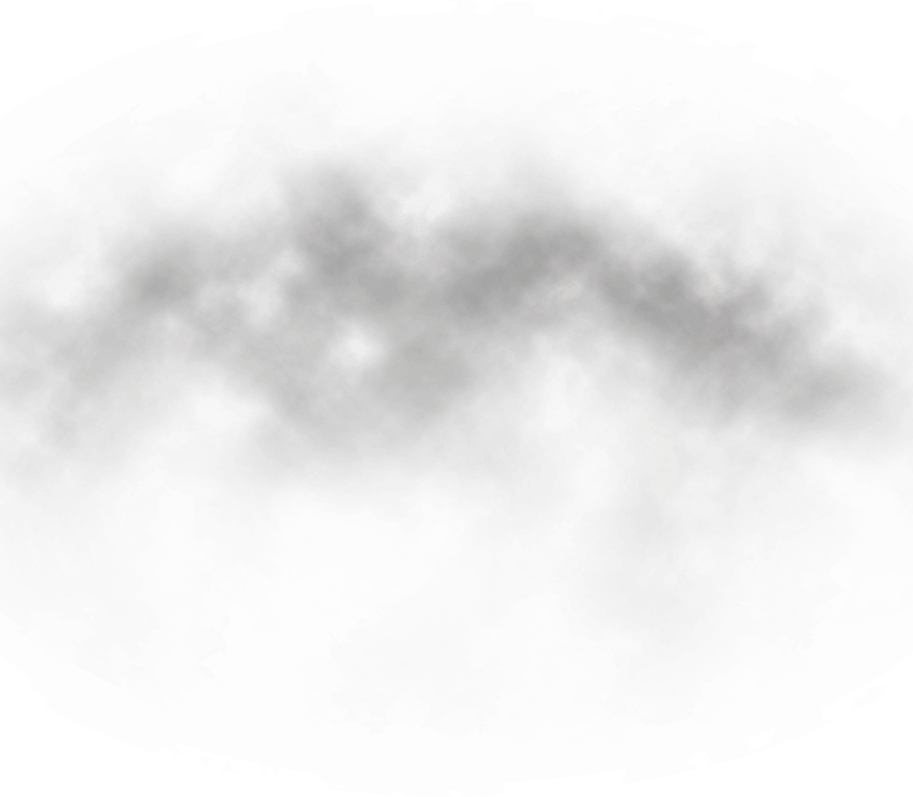
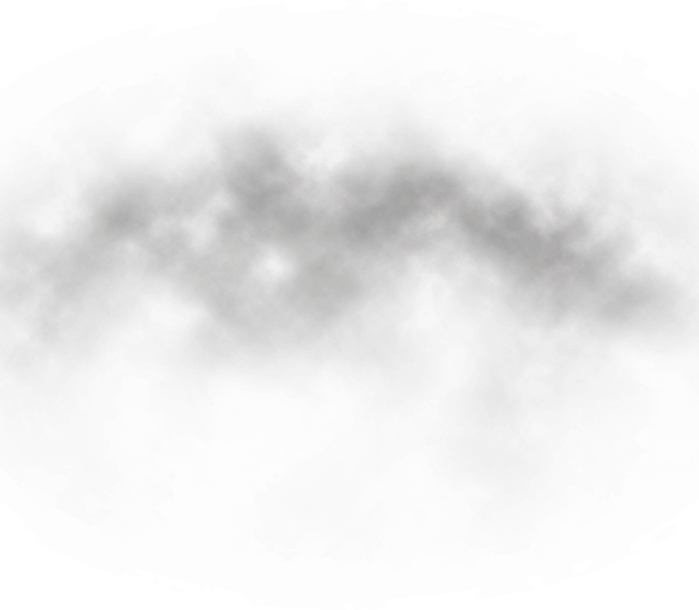
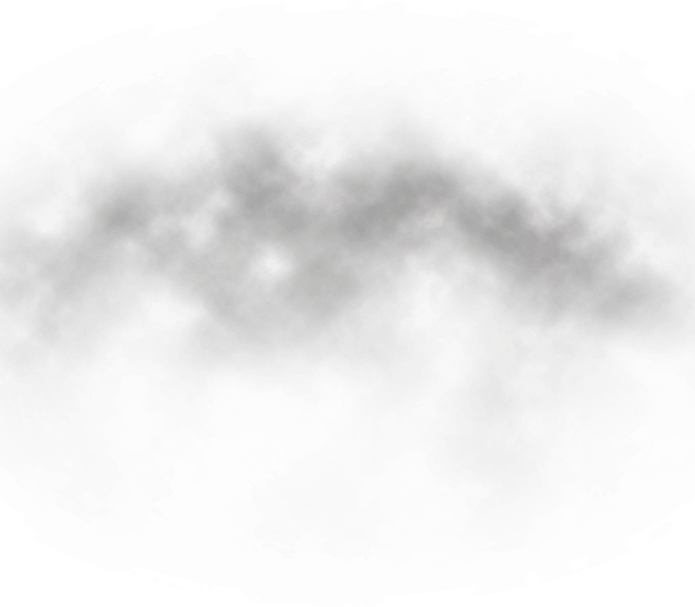

6.9
一百零三萬人大遊行
6.11
添馬公園通宵野餐
6.12
包圍立法會
6.14
香港媽媽集會
6.15
失去義士
6.16
二百萬零一人大遊行
6.21
包圍警察總部
6.26
G20多國領事館請願
愛丁堡廣場集會
包圍警察總部
6.29
失去義士
6.30
失去義士
7.1
佔傾立法會
7.3
失去義士
7.6
光復屯門
7.7
九龍遊行
7.13
光復上水
7.14
沙田遊行
7.17
銀髮族遊行
7.21
港島區大遊行
7.26
和你飛集會


<



 


